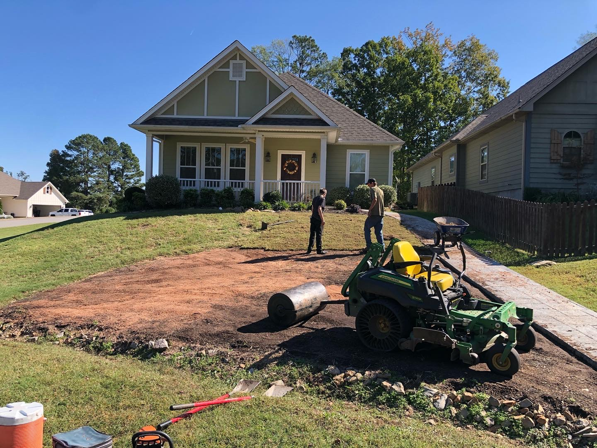
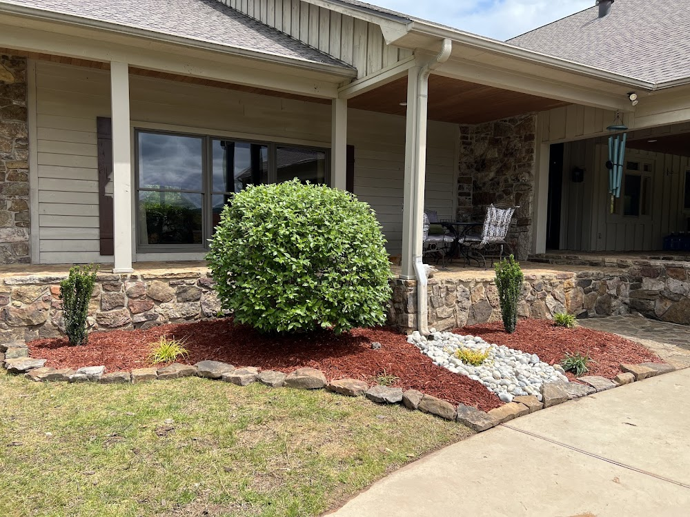
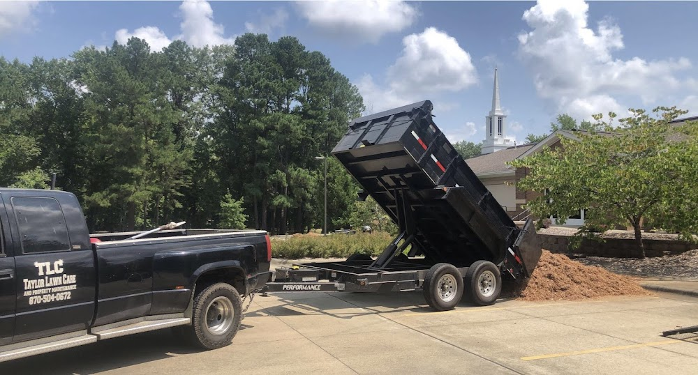

Taylor Lawn Care and Property Maintenance handles lawn care and landscaping across Russellville & Pope County — a 4.5 from 15 local customers, and a phone call away.
— Recent work —



— On the menu —
Routine mowing, edging, weeding and clean-ups that keep your property sharp all season.
Beds, planting, mulch and yard improvements that lift the whole property.
Trimming, shaping and shrub care around the yard.
Seasonal and one-time clean-ups to reset an overgrown yard.
4.5
Rating
15
Reviews
AR
Russellville
— Open board —
| Mon-Sun | 6:00 AM - 8:00 PM |